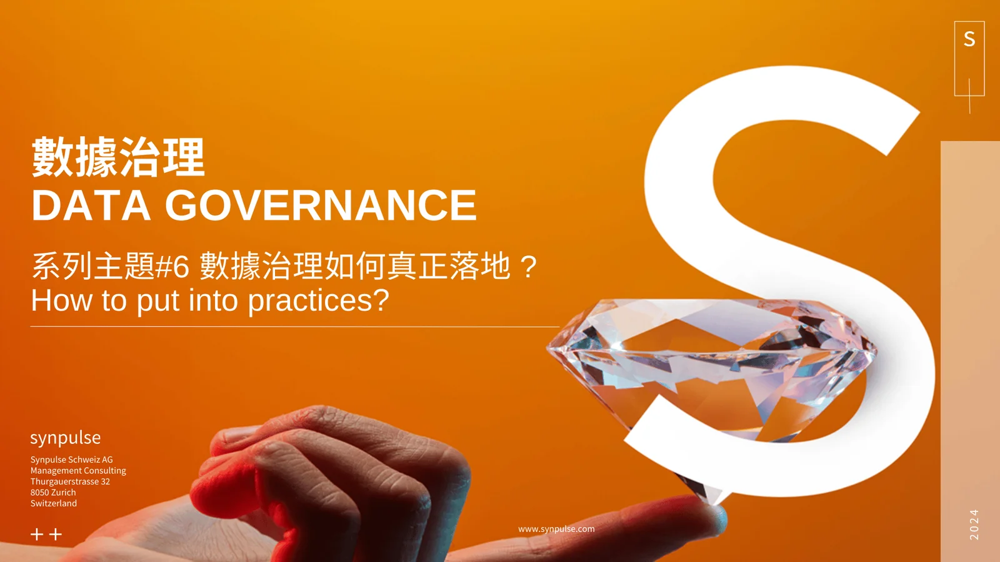
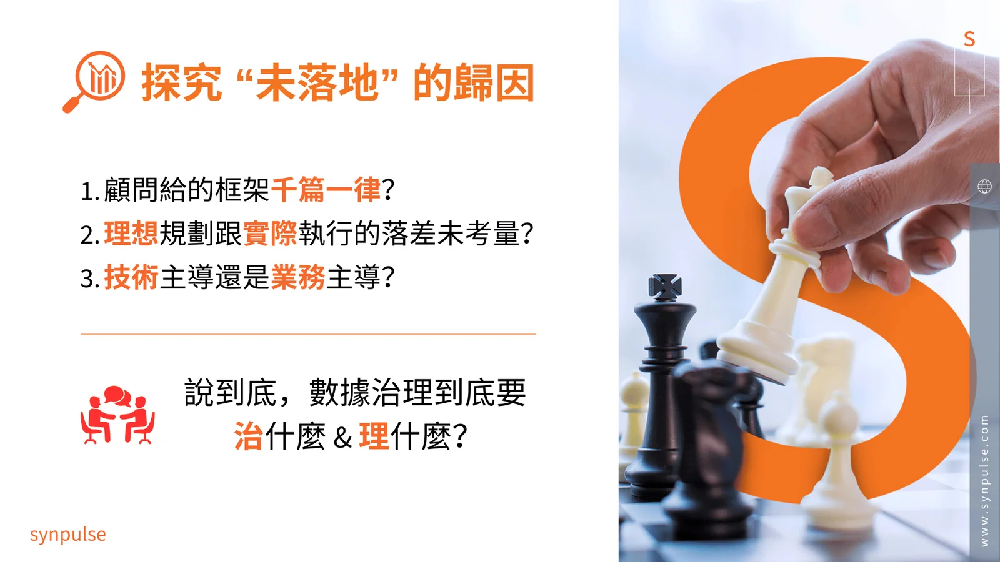

近期接到多個客戶以及合作夥伴的提問，關於數據治理總是無法落地的問題。在本篇文章中將重點式地介紹我們的經驗與觀察，並且提供發想的方向供參考。
Data Governance 為何無法落地？——從框架到真正產生價值
在當今企業數位化轉型的浪潮中，Data Governance（數據治理）成為了許多企業的關鍵策略之一。然而，許多企業投入大量資源，導入了各類框架、標準與系統，卻仍然難以真正落地，無法在業務中創造實際價值。這種「有框架、無應用」的現象，究竟是什麼原因造成的？又該如何避免？
許多企業在數據治理的推動上，往往會遇到以下幾種常見的「未落地」情境：
1️⃣ 導入了框架，卻難以套用
許多企業從顧問或業界標準中導入了 Data Governance 框架，但這些框架可能過於理論化，與企業的實際業務場景脫節，導致難以真正應用。
2️⃣ 建立了數據標準，卻未被依循
許多企業雖然設立了數據標準，但卻沒有相應的機制來確保這些標準被遵循。例如，數據格式標準雖然制定了，但不同部門仍各自為政，導致數據品質依舊參差不齊。
3️⃣ 採購了大型系統，但無法滿足需求
許多企業認為購買一個強大的數據管理系統，就能解決數據治理問題。然而，若缺乏清晰的需求分析與內部使用者的參與，這些系統最終可能無法真正解決業務痛點。
4️⃣ 建立了管理流程，但仍存在漏洞
一些企業花費大量時間建立數據治理的管理流程，但缺乏強制執行與監督機制，導致實際執行時依然出現數據錯誤、流程不透明等問題。
這些現象的本質問題在於：企業到底是買了一個「精美的系統」，還是讓數據治理真正成為業務運營的一部分？

為什麼 Data Governance 會難以落地？
那麼，為何這些數據治理計畫無法真正落地？根本原因可以歸納為以下幾點：
🔍 1. 顧問提供的框架是否千篇一律？
許多企業依賴顧問公司提供的標準化框架，但這些框架往往是通用模板，缺乏針對企業自身業務模式與數據需求的客製化調整。當這些框架無法貼合企業實際運營時，自然難以落地。
🔍 2. 理想規劃與實際執行的落差是否被考量？
許多數據治理計畫在規劃階段看似完美，但在落地執行時，卻因組織文化、技術限制或人員意識等因素，導致無法真正推動。企業往往高估了員工對新標準與流程的接受度，而忽略了變革管理的重要性。
🔍 3. 技術主導 vs. 業務主導：誰應該負責？
很多數據治理專案由 IT 部門主導，但 IT 與業務部門的目標往往不同。IT 部門關注技術架構與系統落實，而業務部門則希望能快速應用數據解決實際問題。若企業未能在技術與業務之間找到平衡，數據治理便難以真正產生價值。
說到底，數據治理在 「治什麼」？ 和 「理什麼」？您的組織是否真的瞭解並且「在同一頁上 (On the same page)」？
換句話說，企業應該先釐清自己希望解決的數據痛點，才能制定合適的治理策略，而不是盲目導入框架與系統。
而如何真正讓 Data Governance 落地？
在推動數據治理落地之前，企業應該先自問以下幾個問題：
💡 1. 我們缺少的是方法論與框架嗎？
若企業對數據治理的概念仍不清晰，可以先引入合適的方法論與框架，但更重要的是確保這些框架能與企業的業務需求相結合，而非僅僅參考業界標準。
💡 2. 我們缺少的是一個強而有力的知名系統嗎？
一個好的數據治理系統確實能夠提升管理效率，但它不應該是解決問題的唯一手段。企業應該先確保數據治理的規則與流程被明確定義，再選擇合適的技術工具來支撐這些規則。
💡 3. 我們缺少的是各式各樣的流程嗎？
有些企業認為建立了完整的流程就能解決數據治理問題，但若缺乏有效的執行與監督，這些流程可能只是紙上談兵。企業應該確保治理流程能夠真正與日常業務運營相結合，而不是獨立於業務之外。
我們都會建議客戶：就算上面的問題都解決了，是否就可以落地了？如果不行，那落地的障礙在哪裡？
結語：「落地」才能「產生價值」；精美的投影片與華麗的系統沒有辦法。